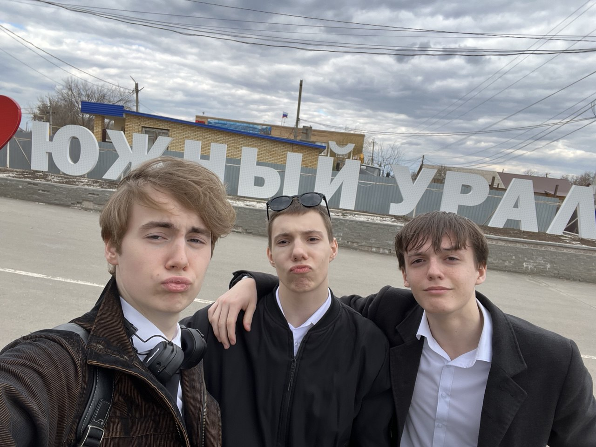
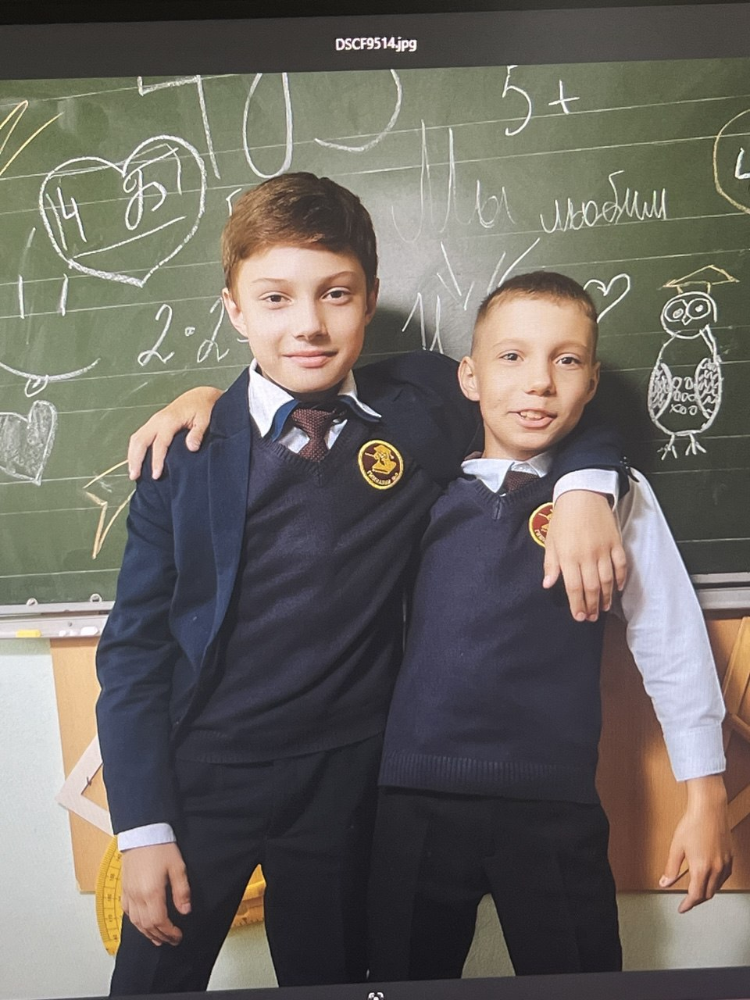
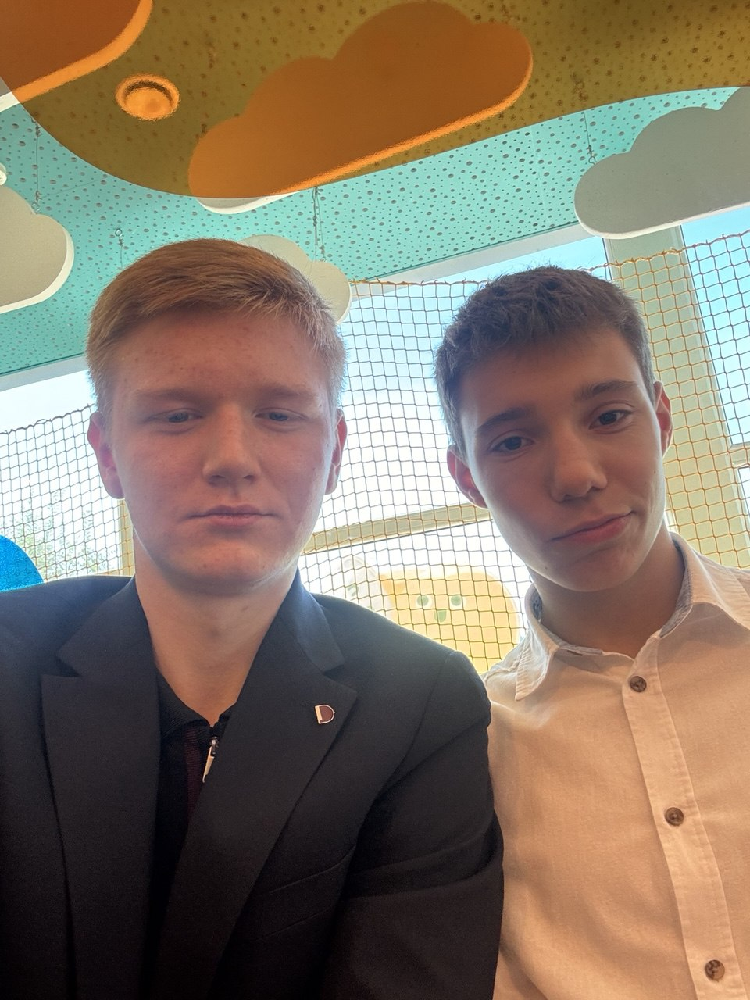

На фотографии изображён молодой человек в помещении с современным интерьером. Он одет в классическую рубашку-поло оливкового цвета. На заднем плане видны светлые шторы и часть потолочного освещения, создающего мягкий, равномерный свет. Атмосфера снимка спокойная и располагающая
На фото трое парней позируют на фоне надписи «ЮЖНЫЙ УРАЛ». Они в рубашках и куртках, делают забавные выражения лиц. На заднем плане — здания, забор и пасмурное небо..


На фото два мальчика в школьной форме стоят перед доской, обнявшись. Оба улыбаются и выглядят дружно. На доске за ними — рисунки, надписи и формулы, создающие весёлую школьную атмосферу.
На фото парень с грустным выражением лица держит вилку с лапшой. Он одет в тёмную кофту с расстёгнутым воротником, на фоне — светлая штора с узором. Выглядит так, будто он не в настроении или просто устал.

На фото два молодых человека, которые позируют для снимка. Один из них одет в тёмный пиджак, а другой — в белую рубашку. Они находятся внутри помещения с ярким интерьером, где на фоне видны облака и элементы декора. Субъекты на снимке выглядят спокойными и серьезными. опиши фото
На фотографии изображён молодой человек с короткой стрижкой, который делает забавное выражение лица, свистя губами. Он держит смартфон в руке и, похоже, фотографирует себя в зеркале. На нём чёрная куртка и белая рубашка, а в ушах у него наушники.